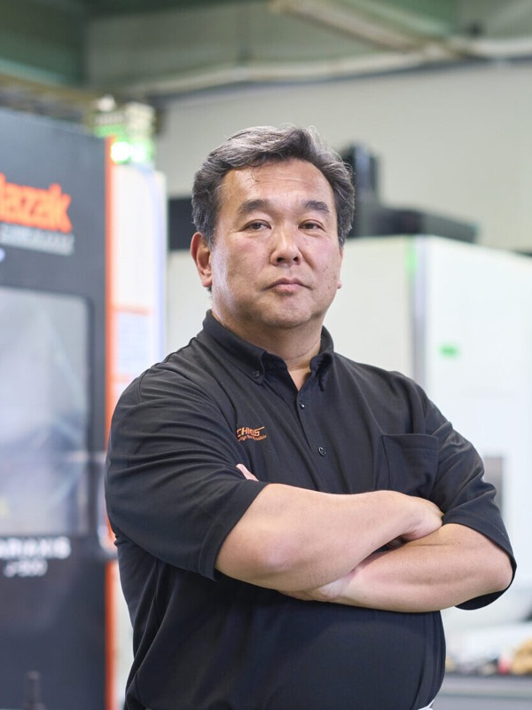
岡山から全国へ! 技術で挑むテクノスの挑戦
藤井 範之noriyuki fujii
株式会社テクノス 代表取締役
1962年岡山県総社市生まれ。学校卒業後、自動車部品メーカーで金型製作に携わる。その後、ゴム金型メーカーで17年間研鑽を積む。2001年に38歳でテクノスを創業し、2004年に法人化。「CHALLENGE THE IMPOSSIBLE」を掲げ、通販型スタイルで全国に挑戦を続けている。
企業サイトを見るCHAPTER 01
サラリーマンから独立へ激変する時代を見据えた原点
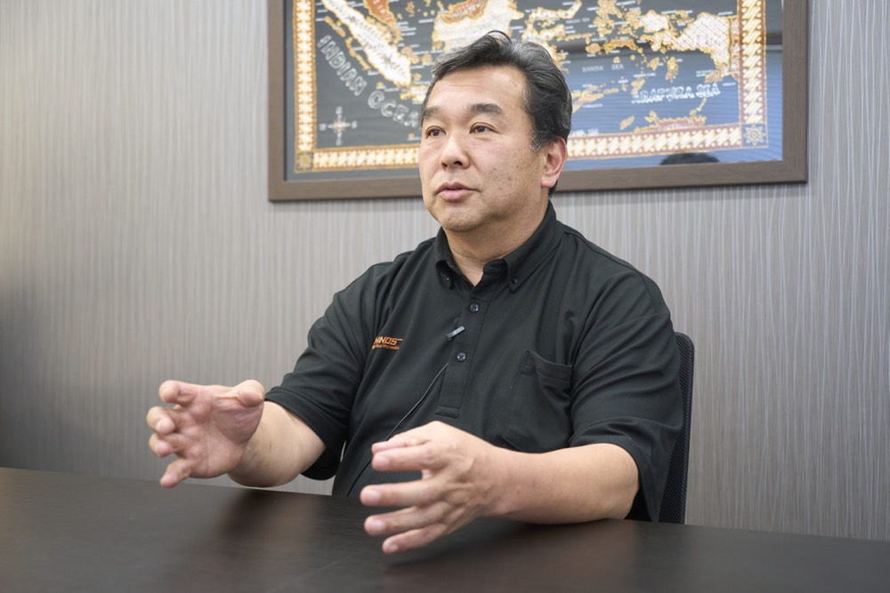
Qなぜ38歳という年齢で、安定したキャリアを捨てて独立を志されたのでしょうか?
A学校を卒業した後は自動車のブレーキメーカーで金型の仕事から社会人をスタートしました。その後、倉敷にある金型メーカーに転職し17年ほどサラリーマンとして働いていました。当時は給料も良く生活に困っていたわけではありません。技術的にも高度な5軸加工までこなせるようになり職人として一定の領域に達していました。
しかし、周囲が「このままでいいや」とマンネリ化していく空気に、どうしても強い危機感を覚えたのです。私は若い頃に「金型職人は一生食いっぱぐれない」と言われていましたが、バブル崩壊後に仕事が海外へ移管されるのを目の当たりにしました。その経験から時代の変化を先読みして動かなければ未来はないと痛感していたのです。自分の成長を自分でコントロールしたい、そして死ぬ前に「目一杯やりきった」という納得感を持って人生を終えたい。その強い想いが、38歳での独立という大きな決断へと私を突き動かしました。
Q未経験の経営の世界へ飛び出すことに周囲の反対や不安はなかったのですか?
A親族や周囲からは猛反対されました。財務の知識など全くなく、まさに「当たって砕けろ」のスタートだったからです。しかし、不思議とゼロになる恐怖心はなく、新しいことに挑戦したいという高揚感が勝っていました。独立当初の4〜5年は正月とお盆に1日ずつ休む以外は夜中もずっと働き続ける年中無休の生活でした。50歳までは日曜日も関係なく現場に立ち続けましたね。1人でやっていた頃の方が病気への恐怖や家族への責任から不安が大きかったです。苦しい環境に身を置き、必死に壁を乗り越えていくプロセスこそが、経営者としての私の土台を形作り現在の株式会社テクノスへとつながる原動力になったと確信しています。
CHAPTER 02
「アマゾンのような鉄工所」を目指す唯一無二の強み
Qテクノスの事業の特徴や従来の鉄工所とは一線を画す強みについて教えてください。
A私たちはマシニングセンタやNC旋盤を駆使しアルミやステンレスなどの機械加工を行っています。半導体や液晶の製造装置、さらには航空宇宙関係まで手がける分野は多岐にわたります。新幹線の先頭車両のボディ削りなど、高度な実績も数多くあります。
Q事業を拡大し挑戦を続ける上で最も大切にされている信念は何ですか?
A会社を成長させる最大の理由は「良い仕事がしたい」という負けず嫌いな気持ちと、事業の安定性を求めた結果です。他社が難易度の高い仕事をこなしているのを見ると、自分がやっていないことが悔しくてストレスになるんです。また、どれほど高い技術を持っていても会社の規模が小さければ世の中に知られるような大仕事の依頼は回ってきません。規模拡大はプライドをかけた挑戦でもありました。
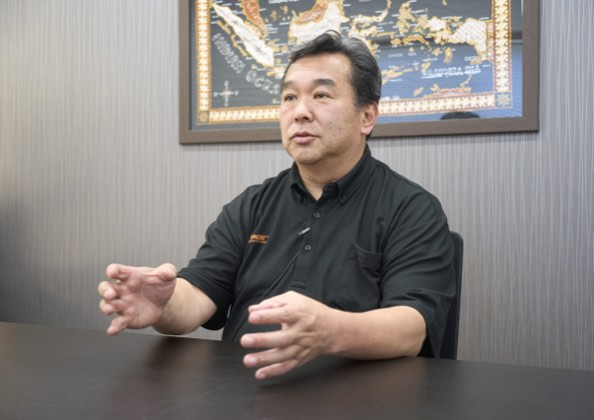
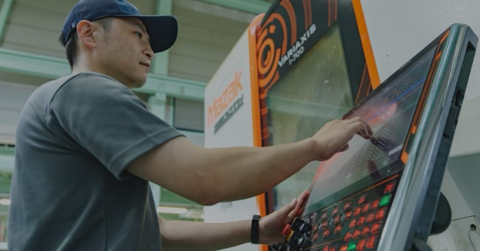
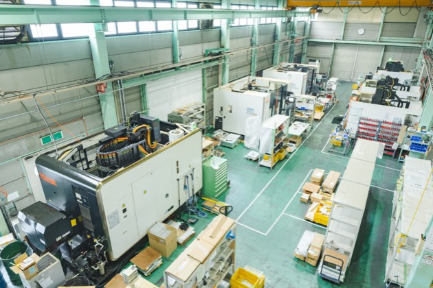
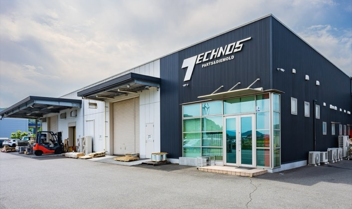
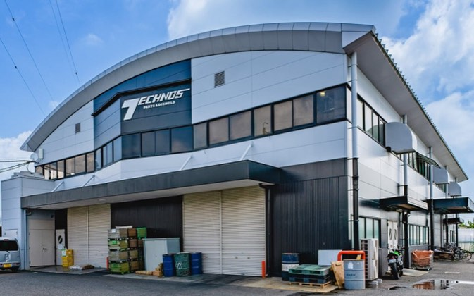
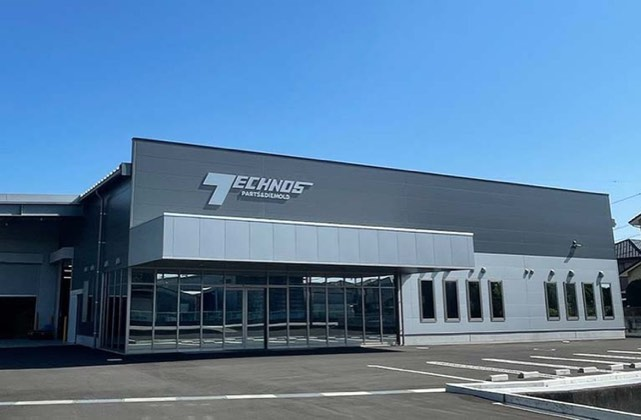
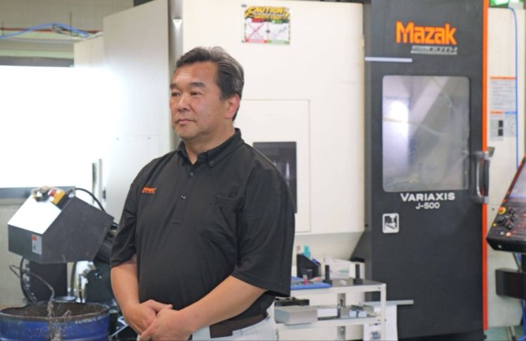
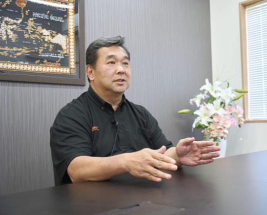
CHAPTER 03
国境を越えた人材躍進と未来への崖っぷち経営
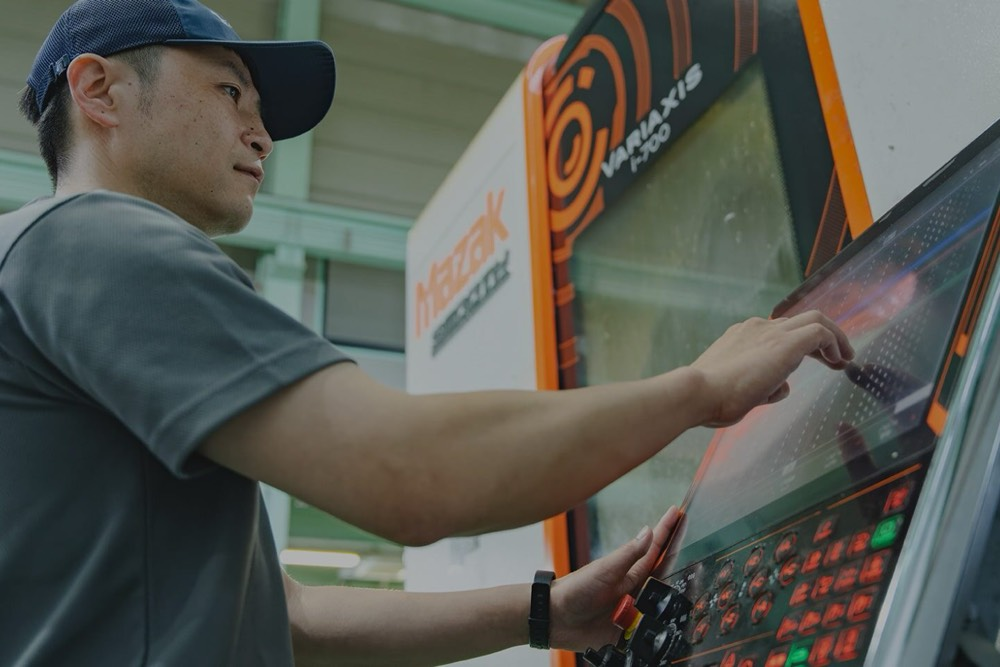
Q人手不足やグローバル化が進む中でどのような組織づくりや拠点展開を行っていますか?
A現在、グループ全体の従業員数は130名ほどですがその顔ぶれは非常に国際色豊かです。日本人だけでなくベトナムやインドネシア、スリランカの優秀な人材が共に働いています。特にベトナム人は全員が専門ビザを持つ高度な人材で外国籍の社員が全体の約半分を占めるほど重要な戦力です。
また積極的な拠点展開にも注力しています。2026年には新たに鳥取工場が操業を開始しました。総社市内に新工場を立ち上げたばかりのタイミングでしたが、中古物件の素晴らしいチャンスを逃すわけにはいかないと本気で踏み切りました。さらにベトナムにもオフィスを開設しており、今後は海外からも直接仕事を取りにいく体制を確立させていきます。世界に目を向け常に先手を打って挑戦することがこれからの時代を生き抜くために不可欠です。
Q今後の目標や日本のものづくりに対する熱い想いをお聞かせください。
A2036年までに年間売上100億円を達成するという目標を掲げています。将来的には、航空や防衛、ロケットといった最先端の分野へとさらに深く進出していきたいと考えています。私の経営は、常に少しでも足を止めれば転落してしまうという緊張感を持つ
「崖っぷち経営」です。常に前傾姿勢で挑み続けています。
私が挑戦にこだわるのは、今の日本に対する強い危機感があるからです。日本は資源がない国だからこそ、高い技術力で付加価値を生み出して世界と渡り合ってきました。ものづくりへの情熱を失ってしまえば、ただのアジアの一国に成り下がってしまいます。だからこそ、私たちは「CHALLENGE THE IMPOSSIBLE」を体現し続けなければなりません。80歳のベテラン職人も現役で頑張ってくれています。若い世代も、諸先輩方のガッツを見習い、日本のものづくりの火をさらに大きく燃え上がらせてほしいと願っています。